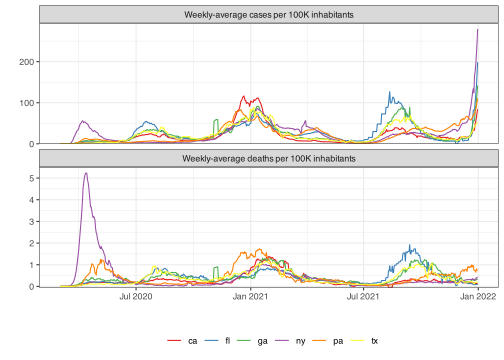

This package contains data sets used to compile vignettes and other documentation in Delphi R Packages. The goal is to avoid calls to the Delphi Epidata API, and deposit some examples here for easy offline use.
Installation
You can install the development version of epidatasets like so:
# install.packages("remotes")
remotes::install_github("cmu-delphi/epidatasets")Contents
This package contains a number of different datasets, along with the code used to generate them. See the Source Code if you want to examine the necessary API calls.
All data included here is in epi_df format, which is a subclass of tbl_df which is a subclass of data.frame. The data will print nicely if you load the epiprocess or tibble packages, but these are not required to access or inspect the data sets. For example,
library(epidatasets)
head(cases_deaths_subset)#> geo_value time_value case_rate_7d_av death_rate_7d_av cases cases_7d_av
#> 1 ca 2020-03-01 0.0032659 0.0000000 6 1.285714
#> 2 ca 2020-03-02 0.0043545 0.0000000 4 1.714286
#> 3 ca 2020-03-03 0.0061689 0.0000000 6 2.428571
#> 4 ca 2020-03-04 0.0097976 0.0003629 11 3.857143
#> 5 ca 2020-03-05 0.0134264 0.0003629 10 5.285714
#> 6 ca 2020-03-06 0.0199582 0.0003629 18 7.857143Compared to
#> # A tibble: 4,026 × 6
#> geo_value time_value case_rate_7d_av death_rate_7d_av cases cases_7d_av
#> * <chr> <date> <dbl> <dbl> <dbl> <dbl>
#> 1 ca 2020-03-01 0.00327 0 6 1.29
#> 2 ca 2020-03-02 0.00435 0 4 1.71
#> 3 ca 2020-03-03 0.00617 0 6 2.43
#> 4 ca 2020-03-04 0.00980 0.000363 11 3.86
#> 5 ca 2020-03-05 0.0134 0.000363 10 5.29
#> 6 ca 2020-03-06 0.0200 0.000363 18 7.86
#> 7 ca 2020-03-07 0.0294 0.000363 26 11.6
#> 8 ca 2020-03-08 0.0341 0.000363 19 13.4
#> 9 ca 2020-03-09 0.0410 0.000726 23 16.1
#> 10 ca 2020-03-10 0.0468 0.000726 22 18.4
#> # ℹ 4,016 more rowsCompared to
library(epiprocess)
cases_deaths_subset#> An `epi_df` object, 4,026 x 6 with metadata:
#> * geo_type = state
#> * time_type = day
#> * as_of = 2023-06-07 16:50:07.8681
#>
#> # A tibble: 4,026 × 6
#> geo_value time_value case_rate_7d_av death_rate_7d_av cases cases_7d_av
#> * <chr> <date> <dbl> <dbl> <dbl> <dbl>
#> 1 ca 2020-03-01 0.00327 0 6 1.29
#> 2 ca 2020-03-02 0.00435 0 4 1.71
#> 3 ca 2020-03-03 0.00617 0 6 2.43
#> 4 ca 2020-03-04 0.00980 0.000363 11 3.86
#> 5 ca 2020-03-05 0.0134 0.000363 10 5.29
#> 6 ca 2020-03-06 0.0200 0.000363 18 7.86
#> 7 ca 2020-03-07 0.0294 0.000363 26 11.6
#> 8 ca 2020-03-08 0.0341 0.000363 19 13.4
#> 9 ca 2020-03-09 0.0410 0.000726 23 16.1
#> 10 ca 2020-03-10 0.0468 0.000726 22 18.4
#> # ℹ 4,016 more rowsNote that an epi_df comes with metadata (visible in that final version), that describes the observation frequency, time_type, the unit of geographical measurement, geo_type and the data vintage, as_of. For more on these, see the epiprocess.
For the more visually inclined, that particular data set contains reported 7-day averaged cases and deaths per capita for a handful of US states.
